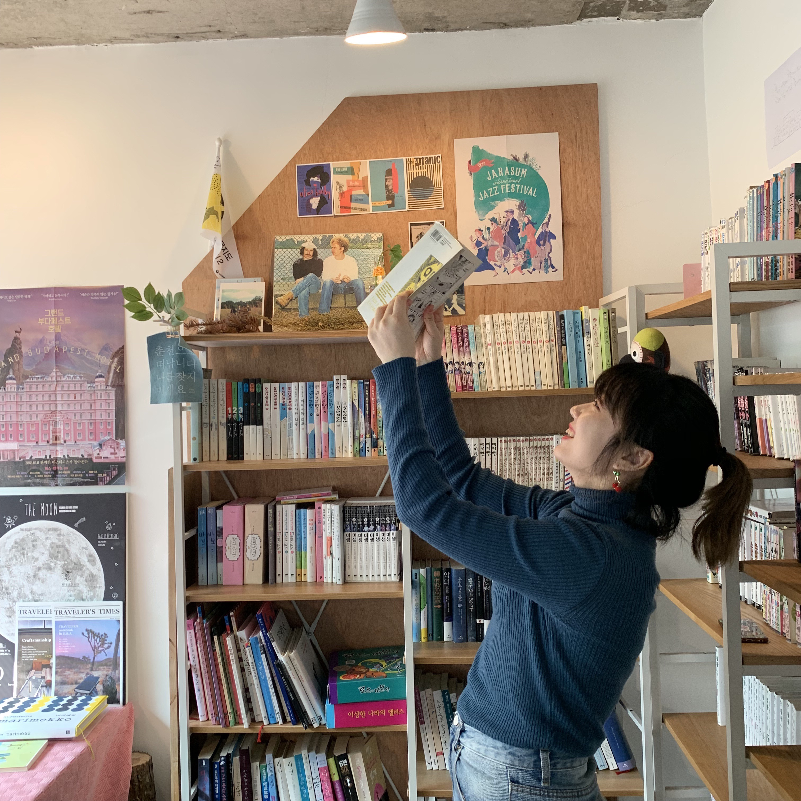
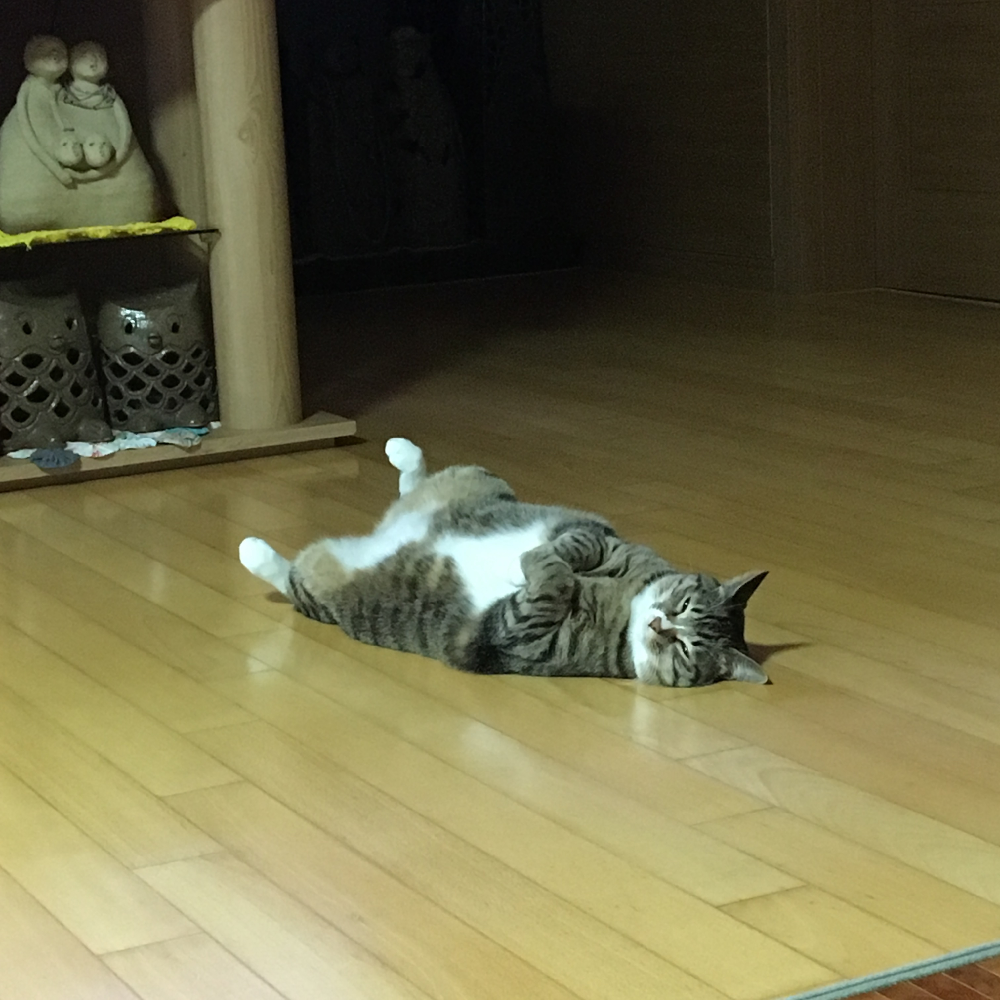
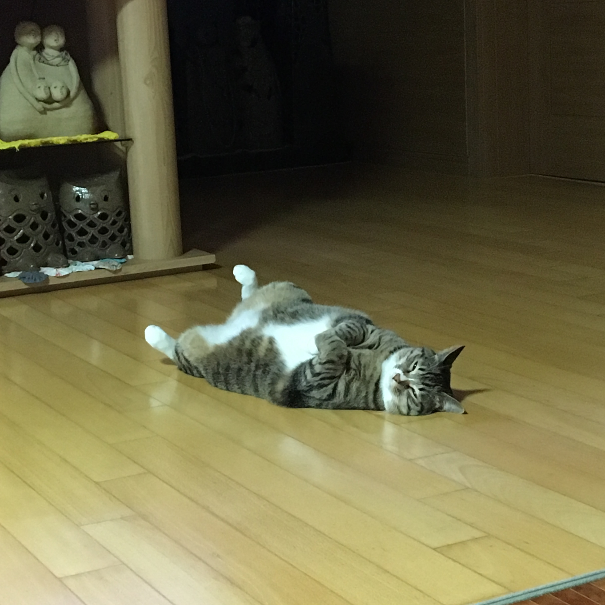
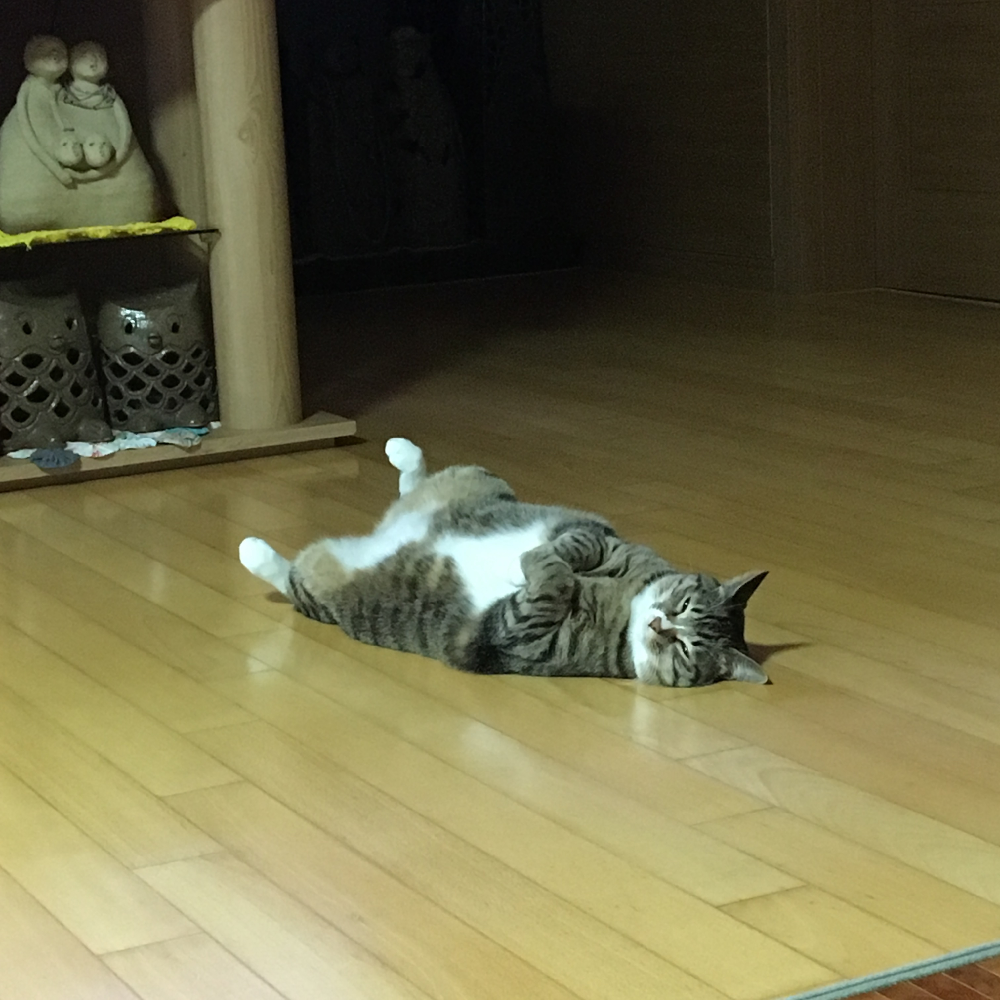

portfolio webpage
A_21861115 조경아 자기소개


기본 소개
- 이름 : 조경아
- 나이 : 22살 호랑이띠
- 좌우명 : 안 하고 후회하지 말고 하고 후회하자 !
좋아하는 것
- 재미있는 술자리
- 밴드 잔나비
- 고양이
- 여행
취미
- 자전거 타기
- 편지 쓰기
- 혼자 영화보기
○ LINK LIST
- first link
- second link
- third link
- fourth link
- fifth link
- sixth link
- seventh link
- eighth link
 
